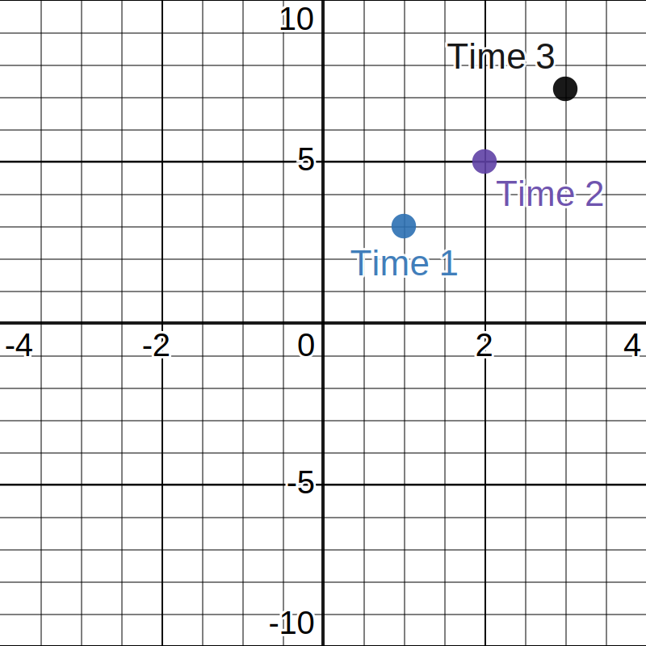

Section 2.2 Converting Between Graphical and Numerical Information
In addition to verbal and algebraic information, you may need to take in or produce graphic or numerical representations of mathematical information. For example, consider the coordinate plane below with three labeled points.

You are asked to describe this graphical information in numerical form. Typically, this means that you will create a table to summarize the information. Because this graph is three discrete (or separate) points, this summary will be easier to create than if the graph were a full curve. We can either represent the table vertically: | \(x\) | \(y \) |
| 1 | 3 |
| 2 | 5 |
| \(x\) | 1 | 2 | 3 |
| \(y\) | 3 | 5 | 7.25 |
Exercises Exercises
Exercise Group.
Graph each of the following numeric representations.
1.
| \(\alpha\) | \(-3\) | \(-2\) | \(-1\) | \(0\) | \(1\) | \(2\) |
| \(g(\alpha)\) | \(9\) | \(4\) | \(1\) | \(0\) | \(1\) | \(4\) |
2.
| \(A\) | \(B\) |
| \(-2\) | \(-\dfrac{1}{2}\) |
| \(-1\) | \(-1\) |
| \(-\dfrac{1}{2}\) | \(-2\) |
| \(-\dfrac{1}{3}\) | \(-3\) |
| \(\dfrac{1}{3}\) | \(3\) |
| \(\dfrac{1}{2}\) | \(2\) |
| \(1\) | \(1\) |
| \(2\) | \(\dfrac{1}{2}\) |